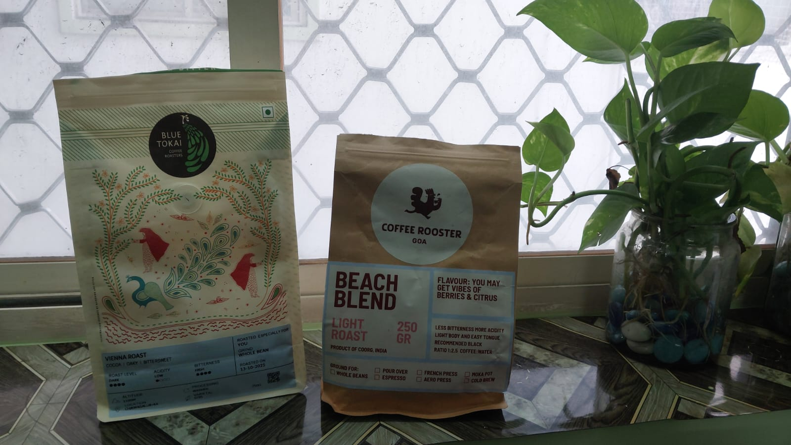

Dark Meets Light
6th Nov, 2025
I tried dark-roast beans. I tried light-roast beans. But what if I mix both?
That's exactly what I tried to find out with cup #11.
However, I didn't literally mix the beans. I brewed two separate cups with dark and light-roast beans and then mixed them.
I did this because dark and light roasts extract differently, so brewing them together risks over-extracting one and under-extracting the other.
Here's the recipe I used for both the cups:
- Coffee : water - 9 g to 150 ml
- Grind size - 4
- Water temperature - 85 °C
- Agitation - 10 sec
- Brew time - 45 sec
Once I brewed both cups, I mixed them together. And the result? Bland. Super bland!
It wasn't sour, wasn't bitter—just tasted like plain water. I couldn't pick up any flavor at all.
I expected way more from this experiment, so I had a chat with AI to figure out what went wrong.
Turns out, I made a few mistakes. The temperature was low—light roasts need closer to 95 °C to extract properly. The brew time was also too short. Plus, I should've tried different ratios like 70:30 or 60:40 light to dark instead of just going 50:50.
Really cool insights! I'll keep these in mind for next time.
But for cup #12? I'm gonna try the inverted Aeropress method. Let's see how that turns out.
Till then, stay caffeinated! ☕️
